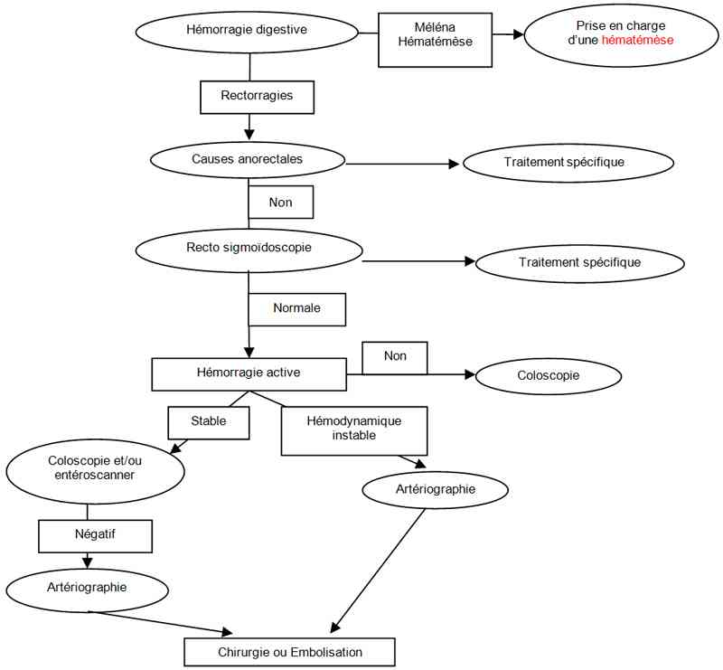

Bienvenue Sur Medical Education
Hémorragie digestive
Spécialité : gastro-enterologie / symptômes /
Points importants
-
Une des principales causes des urgences digestives
-
Une hémorragie digestive doit être systématiquement recherchée dans tout choc hypovolémique
-
La prise en charge nécessite la compensation de l'hypovolémie et la prise en charge spécifique de la lésion
-
En fonction du type d'hémorragie objectivé, on scinde la prise en charge en deux catégories :
-
les hémorragies digestives hautes (au dessus de l'ange de Treitz) qui s'expriment généralement par du méléna ou une hématémèse
-
les hémorragies digestives basses (en dessous de l'angle de Treitz) donnant des rectorragies
-
Les principaux facteurs pronostiques des hémorragies digestives aiguës sont liés au terrain
-
La fibroscopie est un élément essentiel de la prise en charge
Présentation clinique / CIMU
SIGNES FONCTIONNELS
- les hémorragies digestives hautes (au dessus de l'ange de Treitz) qui s'expriment généralement par du méléna ou une hématémèse
- les hémorragies digestives basses (en dessous de l'angle de Treitz) donnant des rectorragies
Présentation clinique / CIMU
SIGNES FONCTIONNELS
Signes généraux liés à l'hypovolémie hémorragique
- Signes de choc
- Malaise lipothymique
- Tachycardie (attention signe absent si prise de ß bloquants)
- Agitation psychomotrice
Saignement extériorisé
-
Hémorragie haute :
- méléna
- hématémèse
- possiblement rectorragies si très abondante
-
Hémorragie basse :
- rectorragies
- possiblement méléna (associé à des rectorragies en général)
- N.B. : En fonction de la localisation haute ou basse de l'hémorragie on distingue une prise en charge commune pour l'hypovolémie mais différente pour la prise en charge spécifique de la cause hémorragique
POUR LES HEMORRAGIES HAUTES
-
Qu'elles soient exprimées par une hématémèse ou un méléna, la prise en charge est celle d'une hématémèse
POUR LES HEMORRAGIES BASSES
Contexte
-
Terrain :
- homme > 60 ans
-
Traitement usuel :
- AINS, antiagrégants plaquettaires, anticoagulants
-
Antécédents :
- lésions anales
- diverticules coliques
- maladie inflammatoire de l'intestin
- néoplasie colique
- pathologies vasculaires
-
Facteurs de risque :
- trouble de l'hémostase acquis ou inné
-
Facteurs de gravité :
-
facteurs de comorbidité :
- coronaropathie
- insuffisance rénale
- âge élevé
-
facteurs de comorbidité :
-
Circonstances de survenue :
- traumatisme rectal
EXAMEN CLINIQUE
Appréciation de l'abondance de l'hémorragie
Signes de choc hypovolémique
- HoTA (hypotension orthostatique)
- Hyperventilation (mesurer la FR)
- Extrémités froides
- Temps de recoloration cutanée > 3 sec
- Pâleur
Examen proctologique
- Inspection de la marge anale (fissure, hémorroïdes)
- Toucher rectal (recherche de tumeur anorectale)
EXAMENS PARACLINIQUES SIMPLES
- ECG
- Hémoglobine capillaire (attention sous-estimation de l'anémie en générale)
- SpO2
CIMU
- Tri 1 à 3 en fonction de la gravité
Signes paracliniques
BIOLOGIQUE
-
Faire : groupe Rh RAI, NFS, TP, TCA, ionogramme sanguin, urée, créatininémie, ASAT ALAT
-
Hémoglobinémie ( NB : reflet retardé de la perte sanguine de 4 h)
-
Hématocrite
-
Lactatémie si choc ou douleur abdominale associée
IMAGERIE
-
Fibroscopie digestive (gastroduodénale si méléna ; recto-sigmoïdoscopie si rectorragie)
-
Démarche diagnostique devant une hémorragie digestive
 _687 Algorithme Démarche diagnostique devant une hémorragie digestive
Diagnostic étiologique
-
Causes anales hémorroïdes, fissures anales
-
Diverticulose colique : Favorisé par la prise d'AINS
-
Angiodysplasie. Plus fréquente en cas d'insuffisance rénale, rétrécissement aortique ou maladie de Willebrand
-
Ulcérations thermométriques
-
Coliques ischémiques. Patient âgé avec des ATCD vasculaires et associées à des douleurs abdominales avec fréquemment un état de choc
-
Colites inflammatoires. Patients jeunes, ATCD de maladie inflammatoire de l'intestin. Hémorragie rarement abondante
-
Tumeurs coliques. Saignement généralement chronique et de faible abondance
Diagnostic différentiel
-
Les selles colorées en noires (fer) pouvant faire croire à un méléna, les selles n'ont pas l'odeur caractéristique du méléna et sont noires virant au vert
Traitement
Diagnostic différentiel
- Les selles colorées en noires (fer) pouvant faire croire à un méléna, les selles n'ont pas l'odeur caractéristique du méléna et sont noires virant au vert
Traitement
Pour les hémorragies hautes qu'elles soient exprimées par une hématémèse ou un méléna, la prise en charge est celle d'une hématémèse
- N.B. : En fonction de la localisation haute ou basse de l'hémorragie on distingue une prise en charge commune pour l'hypovolémie mais différente pour la prise en charge spécifique de la cause hémorragique.
TRAITEMENT PREHOSPITALIER/INTRAHOSPITALIER
Stabilisation initiale
- Pose d'une voie d'abord veineuse périphérique (deux cathéters de 14 G minimum si hémorragie abondante)
-
Remplissage :
-
choix du produit en fonction de l'abondance estimé des pertes :
- < 800 mL : cristalloïdes
- > 800 mL : colloïdes
-
la transfusion de culots globulaires :
- pertes > 1500 mL
- Hb < 7 g/dL
- Hb < 10 g/dL et coronaropathie
- volume de remplissage pour une PAS entre 100 à 110 mmHg
-
choix du produit en fonction de l'abondance estimé des pertes :
- Oxygénothérapie si hypoxémie
- Si rectorragie très abondante, pose d'une sonde naso-gastrique à la recherche d'une hémorragie haute dans ce cas la prise en charge est celle d'une hématémèse
-
La prise en charge diagnostique dépend de l'activité de l'hémorragie :
-
arrêt spontané de l'hémorragie (le plus fréquent) :
- la coloscopie en semi urgence est l'examen clé avec la possibilité de faire des traitements locaux (électrocoagulation des angiodysplasies)
- lorsque des douleurs abdominales sont associées, il faut évoquer une colique ischémique
-
hémorragie active :
-
hémodynamique stable : on a le choix entre 3 examens en fonction des disponibilités et des habitudes locales :
- la coloscopie est moins performante du fait de la mauvaise visibilité mais permet parfois de diagnostiquer ou localiser des lésions orientant un éventuel geste chirurgical
- l'enteroscanner peut localiser un saignement, utile avant un geste chirurgical
- l'angioscanner peut permettre de localiser l'origine du saignement
- en cas d'échec et de saignement persistant, l'artériographie est l'examen à privilégier
- enfin, en cas d'échec de l'artériographie, la laparotomie reste le dernier recours thérapeutique
-
hémodynamique instable :
- artériographie pour embolisation
- chirurgie (laparotomie exploratrice)
-
hémodynamique stable : on a le choix entre 3 examens en fonction des disponibilités et des habitudes locales :
-
arrêt spontané de l'hémorragie (le plus fréquent) :
Surveillance
CLINIQUE
-
Critères hémodynamiques : PA, FC, diurèse/h
-
SpO2
-
Volume du remplissage et des culots transfusés
-
Persistance des rectorragies, abondance
PARACLINIQUE
-
Hématocrite
-
Hemocue (valeurs retardées) ou hémoglobinémie
Devenir / orientation
CRITERES D'ADMISSION
Devenir / orientation
CRITERES D'ADMISSION
Hospitalisation en soins intensifs ou réanimation si
- Choc initial
- Hémodynamique instable
- Colite ischémique
- Ou autre défaillance viscérale
Hospitalisation si
- Déglobulisation
- Trouble de l'hémostase
- Toussée de colite inflammatoire
CRITERES DE SORTIE
- Rectorragie inactive, sans retentissement hémodynamique avec une hémoglobine et une hémostase normale
- Causes ano-rectales sans signe de choc avec une hémorragie peu active et sans autre défaillance viscérale
ORDONNANCE DE SORTIE
- Traitement spécifique de la cause
RECOMMANDATIONS DE SORTIE
- Consultation en urgence en cas de malaise
- Consultation spécialisée (gastro-entérologue) à prévoir
Bibliographie
-
D. Pateron Prise en charge des hémorragies digestives, monographie de la SFMU, Paris 2002, Ed Masson
-
Pateron D., Chaillet M., Debuc E. Hémorragies digestives. Congrès national d'anesthésie et de réanimation 2007. Les essentiels. 477-486
-
Pateron D., Debuc E Prise en charge d'une rectorragie dans le cadre de l'urgence. Monographie de la Société Francophone de Médecine d'Urgence, Ed Masson, Urgences 2006. 159-170
-
Hochain P. Epidémiologie des hémorragies digestives aiguës. In Prise en charge des hémorragies digestives, Masson, Paris 2002
-
Zuckerman GR, Prakash C. Acute lower intestinal bleeding. Part I : clinical presentation and diagnosis. Gastrointest Endosc 1998; 48 : 606-17
-
Rajan R., Dhar P., Praseedom RK, et al. Impact of emergency angiography in massive lower gastro-intestinales bleeding. Ann Surg 1986 ; 204 : 530-6
Auteur(s) : Erwan DEBUC, Dominique PATERON